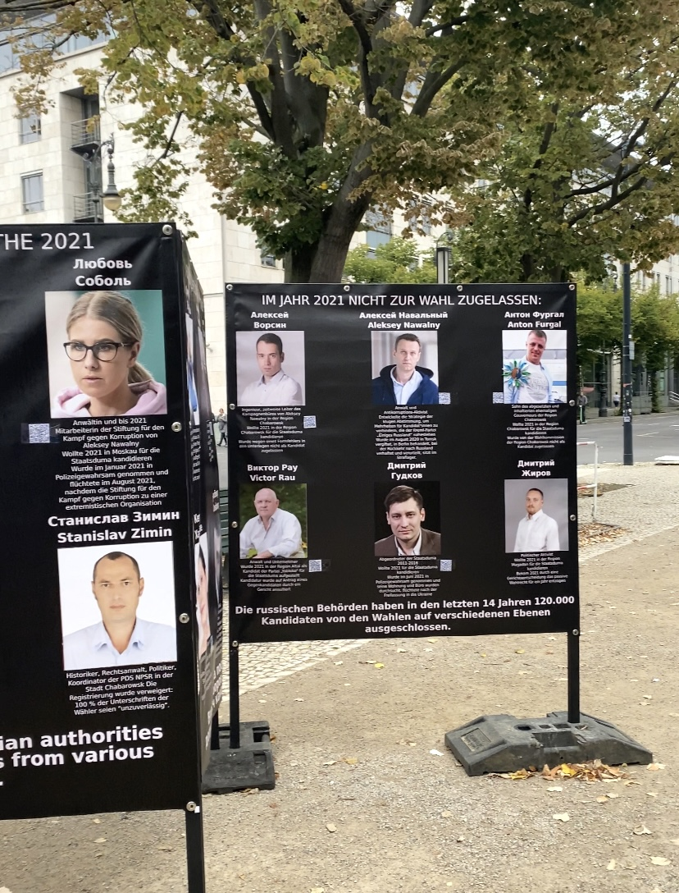
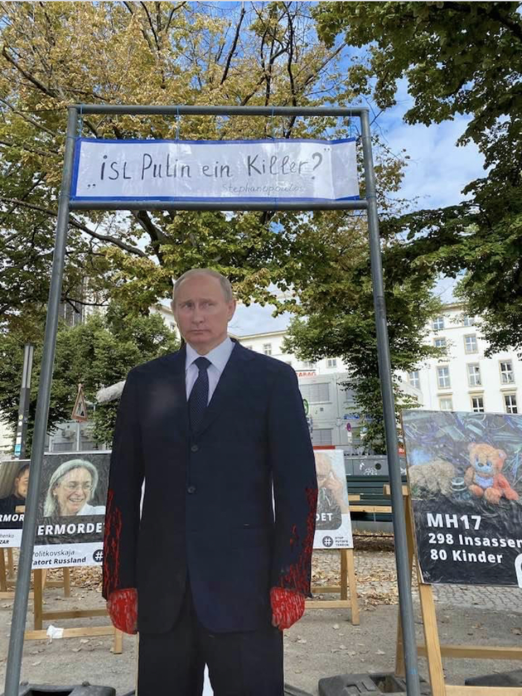

Inhalt dieser Seite
Hallo, Freunde!
Nun werde ich euch von dem Ereignis erzählen, das meiner Verhaftung wegen angeblich versuchten Mordes vorausging. Es wird darum gehen, wie ich die Staatsanwaltschaft in Berlin „beleidigt" habe und die Ereignisse der Putin-Administration gestört habe. Und was kam dabei heraus?
Diese Geschichte besteht aus 5 Teilen:
- Über die Bedeutung von Wahlen in Putins Russland und ob es möglich ist, die Fälschung der russischen Wahlen in Deutschland für 400 Euro zu verhindern.
- Über die Figur Putins und die Aufschrift „Putin is a Killer".
- Der Krimi um den Versuch, die Demonstration am 17. September 2021 zu stören.
- Schlussfolgerungen.
- Zusammenhang mit dem versuchten Mord.
Teil 1: Die Bedeutung der Wahlen in Russland
Am 19. September 2021 fanden in Russland die Wahlen zur Staatsduma der Russischen Föderation statt. Alle Einwohner der Russischen Föderation und der postsowjetischen Länder, die sich zumindest ein wenig für Politik interessieren, wissen sehr wohl, dass die Wahlergebnisse völlig gefälscht sind, dass unbequeme Kandidaten nicht an den Wahlen teilnehmen dürfen und dass die Wahlergebnisse manipuliert sind.

Die Wahl-Organisatoren müssen eine hohe Wahlbeteiligung sicherstellen. Die Ergebnisse werden ohnehin so ausfallen, wie Putin es sich vorstellt und wünscht. Aber in Europa glauben die Bevölkerung, die Journalisten und die Politiker nicht an eine totale Fälschung in Russland.
Und wie kann man den Europäern die Legitimität der illegitimen Wahlen in Russland beweisen? Ganz einfach: Indem man in allen Massenmedien Fotos von Wählerschlangen in den Wahllokalen der Russischen Föderation und im Ausland – vor den Botschaften – veröffentlicht.

Deshalb sind alle Residenzen von Sonderdiensten, Einflussagenten, kontrollierter Opposition und Millionenbudgets darauf ausgerichtet, am Wahltag eine Schlange vor den Botschaften der Russischen Föderation zu bilden und westliche Medien einzuladen.
Sollte dies verhindert werden? Ja, es ist notwendig. Der Krieg hat diese Notwendigkeit bewiesen. Die europäischen Politiker hatten es mit Mördern zu tun. Und das können wir verhindern!
Deshalb habe ich vom 17. September bis 20. September 2021 eine 24-stündige Demonstration vor dem Eingang der russischen Botschaft in Berlin organisiert. Dort habe ich große Stände mit der Geschichte des Ausschlusses bestimmter Kandidaten in deutscher und englischer Sprache aufgestellt.
Teil 2: Die Figur Putin und die Aufschrift „Putin is a Killer"


Ich habe zum ersten Mal im August/September 2020 einen Sperrholz-Putin angefertigt, als ich die erste Demonstration vor der russischen Botschaft organisierte. Damals gab es noch nicht die Aufschrift „Putin is a Killer". Stattdessen stand Putin vor einem Tisch mit einem Samowar und der Aufschrift „From Russia with love, tea, Novichok" vor dem Hintergrund einer Gasse von Opfern. Etwa 95 % der Passanten machten Fotos und Selfies.
Später habe ich einen Metallrahmen angefertigt und über Putin ein Banner mit der Aufschrift „Putin is a Killer" angebracht. Diese Installation wurde erstmals am 27. Februar 2021 vor der russischen Botschaft in Berlin gezeigt — am Jahrestag der Ermordung von Boris Nemzow.

Vom 9. April bis 9. Mai 2021 organisierten wir ein 24-stündiges Zeltlager vor dem Brandenburger Tor. Dort stand Putin immer an zentraler Stelle vor dem Hintergrund der Opferallee unter der Aufschrift „Putin is a Killer". Auch hier machten etwa 95 % der Passanten Selfies — darunter natürlich auch Polizeibeamte.
Wie läuft die Anmeldung einer Demonstration ab?
Ich sende einen Online-Antrag auf Anmeldung der Demonstration an die Polizei. Dann genehmigt die Versammlungsbehörde die Anmeldung und schickt sie an die örtliche Polizei (Polizeiabschnitt 28). Am Tag der Demonstration kommt ein Polizist und überprüft alle Materialien auf ihre Übereinstimmung mit dem deutschen Gesetz. Alles war immer äußerst freundlich und korrekt.
Teil 3: Der Krimi — Versuch, die Demonstration am 17. September 2021 zu stören
Aktenzeichen: (348Gs)231 Js 3707/21 (3115/21)


Am Morgen des 17. September 2021 kam derselbe Polizist, der am Vortag geholfen hatte, die Opferallee aufzubauen. Er hatte diese Installation bereits bei früheren Demonstrationen gesehen und sagte, er habe schlechte Nachrichten.
Er wurde von Oberstaatsanwalt Raupach angewiesen, den Sperrholz-Putin und das Schild „Putin is a Killer" sofort zu beschlagnahmen. Der Polizist sagte, dass der Oberstaatsanwalt auf dieser Anweisung bestehe, egal, was er entgegnete.
Ich schlug vor, Anführungszeichen auf das Plakat zu malen und die Aufschrift „Putin is a Killer" als Zitat von Joe Biden darzustellen. Der Polizist fand die Idee gut und wollte versuchen, Staatsanwalt Raupach zu überzeugen — doch dieser bestand auf der sofortigen Beschlagnahme.


Nachdem die Polizisten das Plakat in ihr Auto geladen hatten, sagte ich dem Polizisten, dass ich die Aufschrift sofort wiederherstellen würde — diesmal mit Anführungszeichen. Der Polizist antwortete wörtlich:
„Tolle Idee, dann kann ich die Anordnung von Oberprokurator Raupach missachten, und alles wird gut."
Zum Pech der Polizei befand sich ein deutscher Journalist in der Nähe des Geschehens und filmte alles. Am 20. September 2021 veröffentlichte Julian Röpcke in der BILD-Zeitung einen Artikel mit Beschreibung und Fotos.

Gegen mich wurde ein Strafverfahren wegen Beleidigung des Präsidenten der Russischen Föderation eingeleitet. Einige Monate später wurde das Verfahren gemäß § 170 StPO eingestellt.
Am 5. Oktober 2021 bestätigte Richter Dr. Fricke am Amtsgericht Tiergarten die Rechtmäßigkeit der Beschlagnahme des Plakats „Putin is a Killer". Hier ein wichtiges Detail: Derselbe Richter Dr. Fricke erließ am 14. Dezember 2022 einen Haftbefehl gegen mich und bestätigte ihn im Zusammenhang mit einer Anklage wegen versuchten Mordes.
Teil 4: Schlussfolgerungen
Die Aktion fand am Wahltag zur Staatsduma der Russischen Föderation vor der russischen Botschaft in Berlin statt und bewies die Unrechtmäßigkeit der Wahlen in Russland.
- Die Verwaltung des Präsidenten der Russischen Föderation?
- Die Regierung Deutschlands?
- Andere?
Ich habe mich zu 100 Prozent an die Gesetze gehalten. Der Organisator war ich und die Unkremlin e.V. — die deutsche Regierung wurde dadurch von jeglicher Verantwortung befreit.
- Diese Aktion war schädlich für Deutschland? — Nein.
- Diese Aktion war illegal? — Nein. Das Verfahren wurde eingestellt.
- Diese Aktion hat Deutschland in keiner Weise beeinträchtigt. — Ja.
Teil 5: Zusammenhang mit dem versuchten Mord
Am 22. Juli 2024 wurde Dmitry Bagrash vom Landgericht Berlin zu 5 Jahren und 4 Monaten Freiheitsstrafe verurteilt — wegen versuchten Mordes. Das Urteil ist nicht rechtskräftig.
Relevante Verbindungen zu den Ereignissen in Fall 0:
- Richter Dr. Fricke — derselbe Richter, der 2021 die Beschlagnahme des Plakats bestätigte, erließ 2022 den Haftbefehl gegen Bagrash.
- OSCE-Erwähnungen — Am 24.09.2021 und 08.04.2022 nannte die russische Delegation bei der OSZE Unkremlin e.V. ausdrücklich als politisch störende Organisation.
- Richter Groß äußerte im aktuellen Strafverfahren ausdrücklich seinen Unmut über die Anti-Putin-Aktivitäten von Bagrash.
- Facebook-Löschung — Im Zeitraum 28.11.2024 bis 16.12.2024 wurden Beiträge aus Facebook gelöscht, die im Gerichtsverfahren als Beweise verwendet wurden. Zugang zum Facebook-Konto hatten das Landgericht Berlin, OStA Wachs und Richter Groß.
Weitere Details finden Sie in Fall 1 (Strafsache) und in der Analyse (Fall 4).
Originaldokumente & Download
Alle Originaldokumente befinden sich in Google Drive und können dort eingesehen und heruntergeladen werden:
BILD-Zeitung, Julian Röpcke, 20.09.2021: bild.de — Berliner Polizei stoppt Anti-Putin-Protest
Facebook-Quellen (Demonstrationen 2020–2021): facebook.com/bagrasch
OSCE-Dokument PC.DEL/526/22, 08.04.2022 — Erwähnung Unkremlin e.V.
Aktenzeichen Beschlagnahme: (348Gs)231 Js 3707/21 (3115/21)